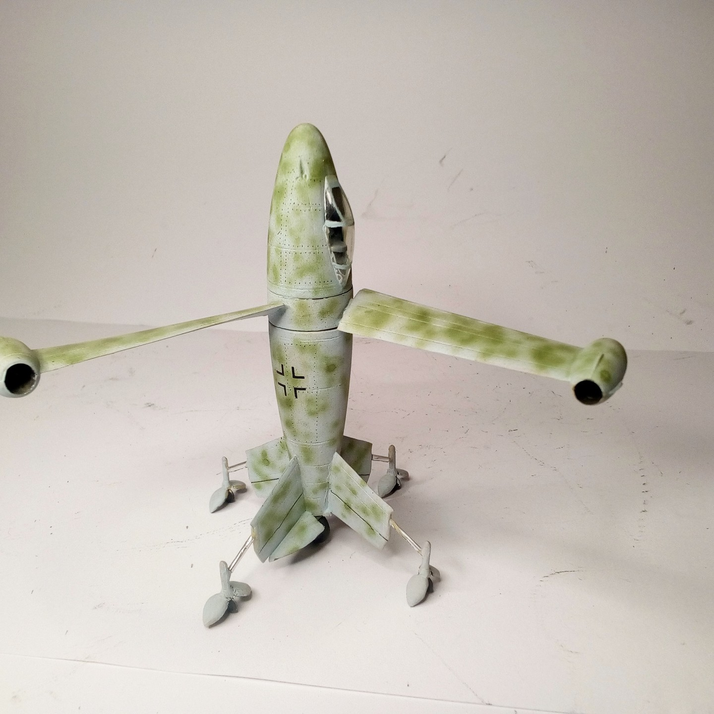

Aerei · scale model archive
Focke Wilf Triebflügel
Focke Wilf Triebflügel — Kit: Airmodel. Scale 1:72 Project of vertical take off and landing jet fighter, doubtful it would have worked #1/72 #Airmodel

Photo gallery
English description
Scale 1:72
Project of vertical take off and landing jet fighter, doubtful it would have worked
#1/72 #Airmodel
Descrizione italiana
Progetto di vertical take off e landing jet figther, doubtful lo would have worked.